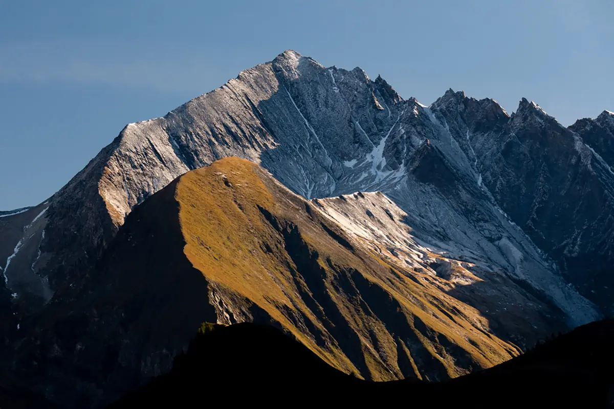
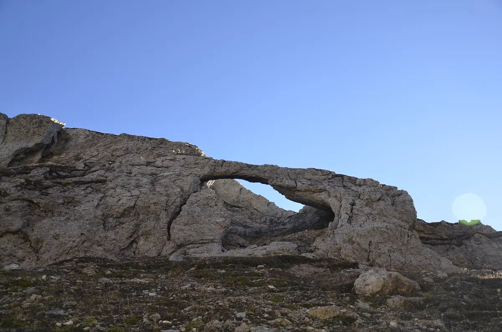
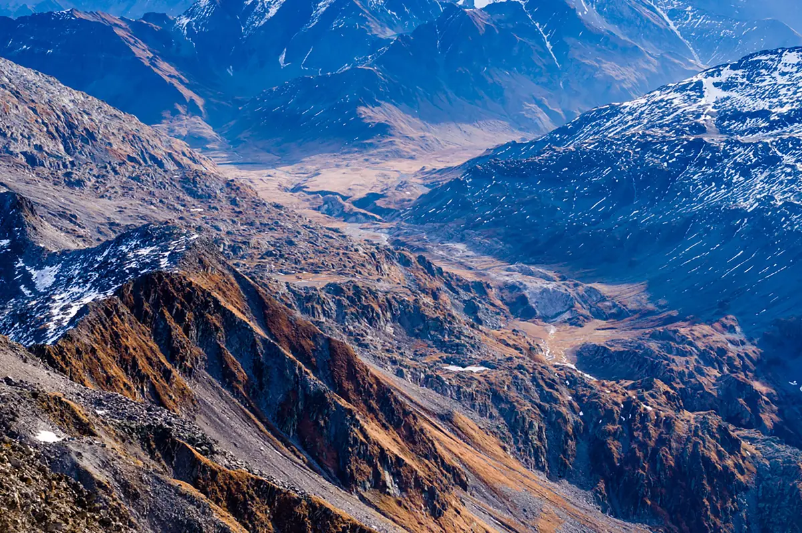
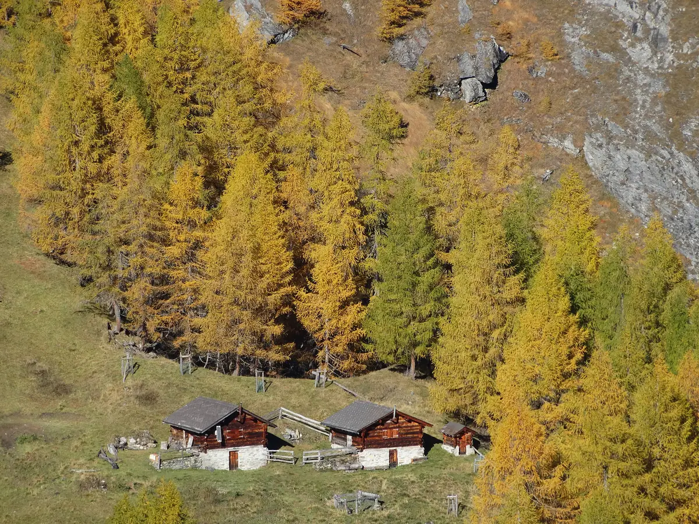
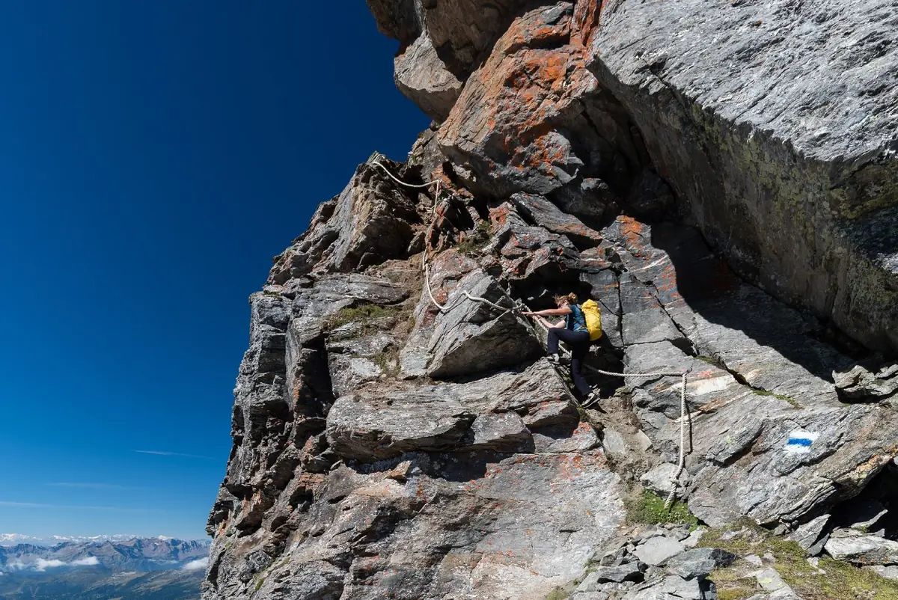

Crap la Crusch
Leichter Spaziergang zum Mittelpunkt der Greina, über die Alpe Motterascio und den Ri di Motterascio.
- Länge
- 6 km
- Höhendifferenz
- +180 m
- Zeit
- 2 h
- Schwierigkeit
- T2
Sechs Touren ab der Hütte: Crap la Crusch, Piz Terri, Greina-Bogen, Plaun la Greina und Via Crio.
Wer mehrere Tage Zeit hat, kann mit diesen Routen den Zauber der Greina voll erleben. Fast alle beginnen und enden bei der Hütte.
Leichter Spaziergang zum Mittelpunkt der Greina, über die Alpe Motterascio und den Ri di Motterascio.

Das Val Güida, der Piz Terri, der Laghet la Greina, das Val Canal und der Crap la Crusch.

Der Pizzo Coroi, der Greina-Bogen, die Mäander, die Felstürmchen und die Quellen von Brenno und Rhein.

Die Quellen des Rheins, die Mäander, die Moore, die parallelen Terrassen, die Grashöcker und der Muot la Greina.

Einsame, wilde Variante abseits der markierten Wege, um die Hütte vom Luzzone her von oben zu erreichen, über die Alpe Coroi, die Alpe Larciolo und die Alpe Garzott.

Zwei Etappen der Via Crio führen an der Hütte vorbei.